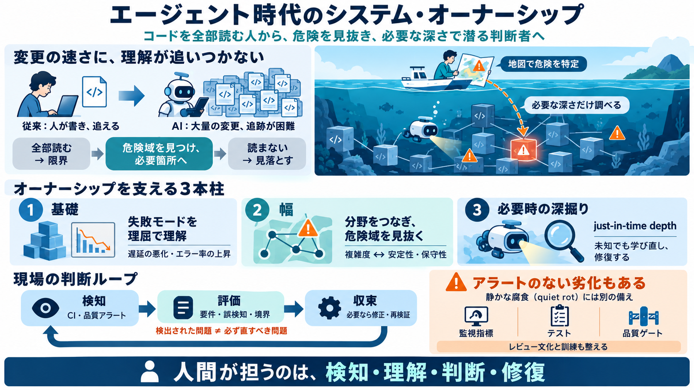

AIコーディングの課題はコードの品質低下とコスト肥大化 New Relicがレポート｜BUSINESS NETWORK
オブザーバビリティプラットフォームを提供するNew Relicは2026年7月30日、AIコーディングの課題や動向をまとめたレポート「The 2026 State of AI Coding Report 日本語版」を発表した。ソフトウェア開…

オブザーバビリティプラットフォームを提供するNew Relicは2026年7月30日、AIコーディングの課題や動向をまとめたレポート「The 2026 State of AI Coding Report 日本語版」を発表した。ソフトウェア開…
生成AIというのは「非決定論的に」コードを生成しているので、プロンプトからは意図せぬ記述がコードに入り込むことがあります。製品によっては、これが重大な事故につながってしまうこともあります。例えば、自動車や航空機、医療機器などのシステムにおけ…
生成AIを活用することで、開発効率や品質の向上が期待される一方で、「生成AIは誤った情報を出力することがある」というリスクも存在します。そのため、生成AIによって作成されたソフトウェアの品質が十分かどうかを確認・検証することが重要です。 …
• 人手では手間がかかっていたテス ト実行と結果の自動記録を、AI エージェントにより実現。 • UIテストの自動化もより柔軟にで きると同時に、UI・機能の変更に 伴うテストコードの自己修復 （セルフヒーリング）を実現する など、メンテナ…
エージェントは、本番環境にアクセスする他のシステムと同様にガバナンスされるべきです。 今日のほとんどのコーディングエージェントは、シートごとに価格設定され、ユーザーごとにスコープされています。支出は開発者が消費したものでしかありません。アク…